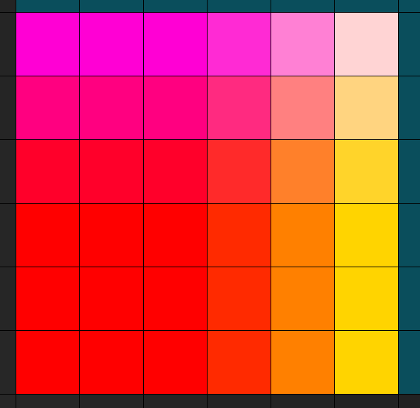

Cette page montre les valeurs d'un buffer WebGL.
Entrons dans le détail :
Le code javascript & WebGL suivant se termine par l'affichage d'un carré dont les couleurs sont les valeurs d'un buffer.
Le carré a une taille affichée de 3x3 pixels.
le voici :
Une capture écran (fouche FN + Impécr) puis une aggrandissement sous Gimp (avec affichage d'une grille) donne l'image suivante
